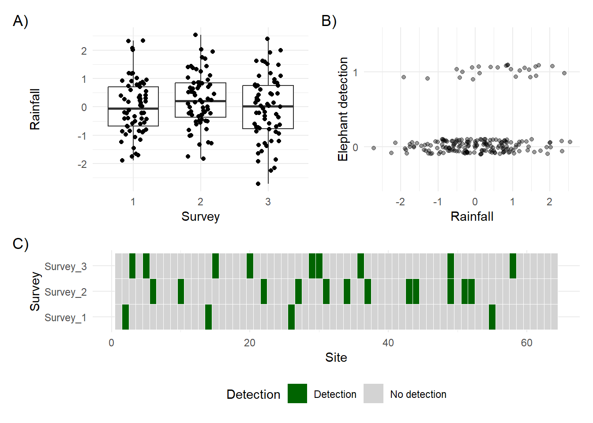

Code
library(spOccupancy)
library(ggplot2)
library(patchwork)On this page, we’ll begin expanding on the intercept-only occupancy model we fit in Occupancy Models: The basics and begin the process of injecting some biology into the etosha elephant occupancy model.
As before, we’ll be using spOccupancy to fit the occupancy model. In addition, I’m also using ggplot2 and patchwork (which allows you to stich ggplots togeher) for visualisations.
library(spOccupancy)
library(ggplot2)
library(patchwork)On the previous page we went through a simple example to get a sense of how occupancy models work. We’re now going to begin the process of slowly increasing the complexity. To start, we’re going to need to include covariates (also called explanatory variables or independent variables or a wide variety of other names - terminology in statistics is a mess).
Let’s revisit our simple occupancy model:
\[ z_i \sim \text{Bernoulli}(\psi_i) \tag{State Stochastic} \]
\[ logit(\psi_i) = \beta_0\\ \tag{State Deterministic} \]
\[ y_{i,j} \sim Bernoulli(p_{i,j} \times z_i)\\ \tag{Observation Stochastic} \]
\[ logit(p_{i,j}) = \alpha_0 \tag{Observation Deterministic} \]
I’ve added some tags to the left to help us keep track of each part. Remember that here stochastic means “the part of the model that deals with randomness”, and deterministic means “the part of the model that deals with why something happens”. In this occupancy model, the State formulae represent why a species is present at a site or not, and the Observation formulae represent if the species is detected or not.
What we’re going to do in this section is to add in covariates to the deterministic parts (why something happens), starting with the observation model.
The first thing to I want to remind you of is that \(y\) is indexed by both \(i\) and \(j\), where \(i\) was the site and \(j\) was the survey. That \(j\) is important because it allows us to specify covariates that vary not just by site (e.g. site 1 has 20 trees while site 2 has 10 trees) but by survey as well (e.g. on survey 1 in site 1, the temperature was 20 degrees, 15 degrees in survey 2 and 5 degrees in survey 3). This means that anything that was different in one survey to the next can be accounted for and included in the model (so long as we can measure and record it).
Specifically, these survey varying covariates are features that we think may have made us (or whoever or whatever collected the data) to be more or less effective. Using cameras? Well maybe the presence of fog has a big impact on how likely we are to detect elephants. Doing surveys yourself? Well maybe the hour of day that you did the survey had a big impact. The point is, we can include these variables that deal with differences in detection probability.

I’ll simulate a new dataset (with a bit more data for us to work with - 64 sites surveyed 3 times each) to show this off. I’ll include a the detection covariate in this case, which is rainfall, but note that the values for rainfall will be centred on zero (don’t worry about this - just treat it as the larger rain is, the more rain there was).
Here’s what the data looks like:
set.seed(1234)
dat <- simOcc(J.x = 8,
J.y = 8,
n.rep = rep(3, times = 8 * 8),
beta = c(1),
alpha = c(-2, 0.5))
obs <- dat$y
det_cov <- dat$X.p[,,2]
df <- data.frame(
survey = rep(1:3, each = 64),
cov = c(det_cov[,1], det_cov[,2], det_cov[,3]),
y = c(obs[,1], obs[,2], obs[,3])
)
p1 <- ggplot(df) +
geom_boxplot(aes(x = factor(survey), y = cov)) +
geom_jitter(aes(x = factor(survey), y = cov),
width = 0.2, height = 0) +
labs(x = "Survey", y = "Rainfall") +
theme_minimal()
p2 <- ggplot(df) +
geom_jitter(aes(y = factor(y), x = cov),
alpha = 0.4, width = 0, height = 0.1) +
labs(x = "Rainfall", y = "Elephant detection") +
theme_minimal()
obs_long <- as.data.frame(obs)
colnames(obs_long) <- paste0("Survey_", 1:ncol(obs_long))
obs_long$Site <- 1:nrow(obs_long)
library(tidyr)
obs_long <- pivot_longer(obs_long,
cols = starts_with("Survey"),
names_to = "Survey",
values_to = "Detection")
obs_long$Survey <- factor(obs_long$Survey, levels = paste0("Survey_", 1:ncol(obs)))
obs_long$Detection <- factor(obs_long$Detection, levels = c(1, 0), labels = c("Detection", "No detection"))
p3 <- ggplot(obs_long, aes(x = Site, y = Survey, fill = Detection)) +
geom_tile(color = "white") +
scale_fill_manual(values = c("Detection" = "darkgreen", "No detection" = "lightgrey")) +
labs(x = "Site", y = "Survey") +
theme_minimal() +
theme(legend.position = "bottom")
design <- "
AB
AB
CC
"
p1 + p2 + p3 + plot_annotation(tag_levels = "A", tag_suffix = ")") + plot_layout(design = design)
A) shows the amount of rainfall over each survey. Each point represents a site in a given survey. B) shows the amount of rainfall against whether or not an elephant was detected. C) shows the detection history, where detections of elephants are coloured green and no detection is coloured grey.
Notice anything? In A) we can see that in each survey, there’s a lot of variation across the 64 sites in how much rainfall there was; maybe peaking in survey 2. In B), it looks like it might be more likely that we detect elephants more often when there’s more rainfall. While C) shows that most of the time we only detect elephants in one survey then never again (remember the assumption of closure? we assume that whenever we detect an elephant, then they were present in all other surveys at that site).
Based on B) how confident are you that there’s an influence on rain on the detection probability of elephants? If you’re confident there is, then how strong do you think it is? Can you say exactly how strong is it?
There’s no way you can answer those questions. That’s where we need stats. So let’s add in rainfall to our model. I’ll recycle the code from the previous document and include rainfall. Here’s how we do that.
Just like in the previous page, we need to include our different datasets into a list. If you’re still not sure what a list is in R, think of it like a folder on your computer. You can add lots of different files to a folder (and any type of file), but they’re all “tied” together by being within the same folder. That’s the same as a list in R.
Here, I’m going to do something seemingly strange. I’m going to create a list and include this into our etosha list. A list within a list. The reason is that we might have more than one detection covariate, so having a list, though redundant here, will make adding additional variables easier in the future.
# Note you wouldn't need to do the dat$X.p[,,2] bit
# That's just because the data is simulated.
det.covs <- list(rain = dat$X.p[,,2])
etosha <- list(
y = dat$y,
det.covs = det.covs
)And we’re good to go on to the modelling.
A few things to note in the R code;
occ.formula = ~ 1 is the equivalent to \(logit(\psi_{i,j}) = \beta_0\)
det.formula = ~ rain is the equivalent to \(logit(p_i) = \alpha_0 + \alpha_1 \times Rain_i\)
We specify that all data is contained in the list (i.e. “folder”) called etosha.
The remainder of the arguments (e.g. n.chains) can be ignored for now.
fit <- PGOcc(
# The state model (i.e. what % that elephants are present?)
# ~ 1 means we want an intercept only model (no covariates)
occ.formula = ~ 1,
# The observation model (i.e. what % that we see elephants if present?)
det.formula = ~ rain,
# Our carefully formatted dataset
data = etosha,
# Details to get the machinery to run that we'll ignore for now
n.chains = 4,
n.samples = 2000,
n.burn = 200,
verbose = FALSE)Having now fit the model to the data, we can see what we’ve learnt:
summary(fit)
Call:
PGOcc(occ.formula = ~1, det.formula = ~rain, data = etosha, n.samples = 2000,
verbose = FALSE, n.burn = 200, n.chains = 4)
Samples per Chain: 2000
Burn-in: 200
Thinning Rate: 1
Number of Chains: 4
Total Posterior Samples: 7200
Run Time (min): 0.0175
Occurrence (logit scale):
Mean SD 2.5% 50% 97.5% Rhat ESS
(Intercept) 1.8753 0.9465 0.3078 1.772 4.0465 1.0516 349
Detection (logit scale):
Mean SD 2.5% 50% 97.5% Rhat ESS
(Intercept) -1.8872 0.2946 -2.4610 -1.8939 -1.2939 1.0165 1038
rain 0.6930 0.2384 0.2328 0.6877 1.1801 1.0025 2604Compared to the model on the previous page we now have additional information for Detection (logit scale); we have both an (Intercept) and rain. These are \(\alpha_0\) and \(\alpha_1\) from our detection model (\(logit(p_i) = \alpha_0 + \alpha_1 \times Rain_i\)). If we really wanted to, we could now replace the parameter labels (e.g. the \(\alpha\)s and \(\beta\)s) with their now estimated values which would look like (rounding the estimates to two decimal points arbitrarily):
\[z_i \sim Bernoulli(\psi_i)\\ \tag{State Stochastic}\]
\[ logit(\psi_i) = 1.88\\ \tag{State Deterministic} \]
\[ y_{i,j} \sim Bernoulli(p_{i,j} \times z_i)\\ \tag{Observation Stochastic} \]
\[ logit(p_{i,j}) = -1.89 + 0.69 \times Rain_i \tag{Observation Deterministic} \]
With this, we can swap out \(Rain\) in the Observation Deterministic equation for any value of rain that we might be interested in, to see how it changes our estimated detection probability. For example, let’s see what happens when \(Rain = 1\) (equivalent to lots of rain based on how I simulated rain).
-1.89 + 0.69 * 1[1] -1.2Our logit value is -1.2. How do we get that into probabilities that we can actually understand? Backtransform out of logit using plogis():
plogis(-1.89 + 0.69 * 1)[1] 0.2314752And we get a ca. 23% chance to detect an elephant when \(Rain = 1\). What about when \(Rain = 0\) (equivalent to medium rain)? Well, we can do that easily enough now that we know thew general steps:
plogis(-1.89 + 0.69 * 0)[1] 0.1312445When \(Rain = 0\), we predict a ca. 13% chance to detect elephants.
This approach, whereby we make a prediction for a specific value of \(Rain\) can be extended into making multiple predictions at once, such that we can then draw a line through them. Here’s how we’d do that.
We start by creating a sequence of \(Rain\) values, rather than doing one a time like we did above. Here we use the seq() function to create a sequence, which will range from the minimum \(Rain\) value to the maximum within our dataset. The number of values that we want in this sequence is specified as 20 but we can choose any value here - we just need enough that the line is drawn “accurately”.
rain <- seq(from = min(det.covs$rain),
to = max(det.covs$rain),
length.out = 20)
rain [1] -2.71815687 -2.44127881 -2.16440076 -1.88752271 -1.61064465 -1.33376660
[7] -1.05688855 -0.78001049 -0.50313244 -0.22625439 0.05062367 0.32750172
[13] 0.60437977 0.88125783 1.15813588 1.43501393 1.71189199 1.98877004
[19] 2.26564809 2.54252615Now we have our values, we don’t want to manually enter each value into our equation. Instead we can use the fact that R works with vectors (i.e. columns of data) to do this quickly and easily:
pred <- plogis(-1.89 + 0.69 * rain)
pred [1] 0.02263134 0.02726568 0.03281714 0.03945308 0.04736516 0.05677017
[7] 0.06790956 0.08104689 0.09646267 0.11444547 0.13527876 0.15922259
[13] 0.18649040 0.21722152 0.25145143 0.28908330 0.32986526 0.37337882
[19] 0.41904309 0.46613767Now for each value of rain, we have the predicted probability of detecting an elephant. Useful but you wouldn’t want to throw these two columns at your audience/reader and expect them to make sense of it. It’d be better if we include these in a figure.
To do so, we’ll combine both columns into a single dataset and plot using ggplot2:
df <- data.frame(
pred,
rain
)
ggplot(df) +
geom_line(aes(x = rain, y = pred))
From this figure it now appears much more intuitive that increasing rain makes elephants easier to detect. We can do a little “tidying” of the figure to make it more visually pleasing:
ggplot(df) +
geom_line(aes(x = rain, y = pred)) +
scale_y_continuous(labels = scales::percent,
limits = c(0,1)) +
theme_minimal() +
labs(x = "Mean rainfall",
y = "Predicted detection\nprobability of elephants")
Based on our figure, we’d now be able to make some biological inference. From what we see in our figure, we have evidence that elephants are easier to spot when it rains. If we were writing this as a paper, we might discuss why that was the case. However (and this is important) we should have really considered this before we did the analysis. The risk of making sense of this now is that we rationalise something that’s actually stupid. This is something called HARKing, or Hypothesising After the Results are Known and it’s a form of scientific fraud. Keep in mind, this is simulated data where the stakes are low. My goal here is to explain the methods to you. With real analysis, we need to be more thorough and responsible - so make sure you have your hypotheses before you do your analysis!
The above figure is a good start but we’re missing any measure of uncertainty. If we were doing frequentist statistics, we would use 95% confidence intervals but these are exclusively frequentist. There are no 95% confidence intervals when we use the Bayesian statistical framework. Instead we have credible intervals. I’ll explain the Bayesian framework in a subsequent workflow but for now here is the formal definition of a credible interval:
There is a 95% probability that the True parameter value lies within the interval range, given the data and model.
This is in contrast with the frequentist confidence interval whose formal definition of a confidence interval is so bizarre and unintuitive that it’s barely useful. 95% credible intervals are actually useful and work exactly the way people think frequentist intervals work. I’ll explain how they work in a later page, so just trust me for now that they’re better.
But how do we include these in the figure? Well, the model summary makes it easy to find the values:
summary(fit)
Call:
PGOcc(occ.formula = ~1, det.formula = ~rain, data = etosha, n.samples = 2000,
verbose = FALSE, n.burn = 200, n.chains = 4)
Samples per Chain: 2000
Burn-in: 200
Thinning Rate: 1
Number of Chains: 4
Total Posterior Samples: 7200
Run Time (min): 0.0175
Occurrence (logit scale):
Mean SD 2.5% 50% 97.5% Rhat ESS
(Intercept) 1.8753 0.9465 0.3078 1.772 4.0465 1.0516 349
Detection (logit scale):
Mean SD 2.5% 50% 97.5% Rhat ESS
(Intercept) -1.8872 0.2946 -2.4610 -1.8939 -1.2939 1.0165 1038
rain 0.6930 0.2384 0.2328 0.6877 1.1801 1.0025 2604They’re the 2.5% and 97.5% values in our summary table. So all we need to do is repeat the code we used to make our predictions, except now using these credible interval values to get our measure of uncertainty. Importantly, if you remember back to BI3010 where you had to multiplya parameters standard error by 1.96, we do not need to do that here. That’s frequentist nonsense - we’re fancy Bayesian scientists now.
Let’s do just that:
df$low <- plogis(-2.4610 + 0.2328 * df$rain)
df$upp <- plogis(-1.2939 + 1.1801 * df$rain)
df pred rain low upp
1 0.02263134 -2.71815687 0.04336427 0.01096960
2 0.02726568 -2.44127881 0.04611831 0.01514457
3 0.03281714 -2.16440076 0.04903828 0.02087495
4 0.03945308 -1.88752271 0.05213304 0.02871039
5 0.04736516 -1.61064465 0.05541172 0.03936862
6 0.05677017 -1.33376660 0.05888379 0.05376451
7 0.06790956 -1.05688855 0.06255900 0.07302436
8 0.08104689 -0.78001049 0.06644741 0.09846565
9 0.09646267 -0.50313244 0.07055932 0.13151304
10 0.11444547 -0.22625439 0.07490526 0.17351714
11 0.13527876 0.05062367 0.07949599 0.22545433
12 0.15922259 0.32750172 0.08434241 0.28752905
13 0.18649040 0.60437977 0.08945559 0.35877811
14 0.21722152 0.88125783 0.09484663 0.43685701
15 0.25145143 1.15813588 0.10052670 0.51819600
16 0.28908330 1.43501393 0.10650691 0.59858193
17 0.32986526 1.71189199 0.11279825 0.67399363
18 0.37337882 1.98877004 0.11941156 0.74135968
19 0.41904309 2.26564809 0.12635738 0.79895748
20 0.46613767 2.54252615 0.13364590 0.84638633And we can add in our uncertainty using geom_ribbon():
ggplot(df) +
geom_line(aes(x = rain, y = pred)) +
geom_ribbon(aes(x = rain, ymin = low, ymax = upp),
alpha = 0.3) +
scale_y_continuous(labels = scales::percent,
limits = c(0,1)) +
theme_minimal() +
labs(x = "Mean rainfall",
y = "Predicted detection\nprobability of elephants")
With that, we have a publication ready figure.
Let’s increase the complexity a bit and have the simulation include multiple covariates. We’ll say that tree height and average temperature affect whether or not a site is occupied (elephants will like tall trees and cooler locations). We’ll still have rain affect our detection probability, as above.
A note here is that the covariates are still centered on zero. That’s just the way the data is simulated but the data you collect does not need to be the same (so ignore the fact that we will have trees that are -1 m tall - the general idea doesn’t change).
A technical note if you’re interested. To create the figures below I need to do some tweaks to the data. The
dfobject I create in the code below has one row per survey, with three surveys per site. Our occupancy covariates,treeandtemphave just one value; these do not change from one survey to the next. If a tree is 3 m tall in survey one, then it’ll still be 3 m tall in surveys two and three. That’s why I “cheat” and replicatetreeandtempthree times each.
set.seed(1234)
dat <- simOcc(J.x = 8,
J.y = 8,
n.rep = rep(3, times = 8 * 8),
beta = c(1, -0.2, 0.3),
alpha = c(-2, 0.5))
obs <- dat$y
temp <- dat$X[,2]
tree <- dat$X[,3]
det_cov <- dat$X.p[,,2]
df <- data.frame(
survey = rep(1:3, each = 64),
cov = c(det_cov[,1], det_cov[,2], det_cov[,3]),
tree = rep(tree, times = 3),
temp = rep(temp, times = 3),
y = c(obs[,1], obs[,2], obs[,3])
)
p1 <- ggplot(df) +
geom_histogram(aes(x = temp)) +
labs(y = "Count", x = "Temperature") +
theme_minimal()
p2 <- ggplot(df) +
geom_jitter(aes(y = factor(y), x = temp),
alpha = 0.4, width = 0, height = 0.1) +
labs(x = "Temperature", y = "Elephant\ndetection") +
theme_minimal()
p3 <- ggplot(df) +
geom_histogram(aes(x = tree)) +
labs(x = "Tree height", y = "Count") +
theme_minimal()
p4 <- ggplot(df) +
geom_jitter(aes(y = factor(y), x = tree),
alpha = 0.4, width = 0, height = 0.1) +
labs(x = "Tree", y = "Elephant\ndetection") +
theme_minimal()
p5 <- ggplot(df) +
geom_histogram(aes(x = cov)) +
labs(x = "Rain", y = "Count") +
theme_minimal()
p6 <- ggplot(df) +
geom_jitter(aes(y = factor(y), x = tree),
alpha = 0.4, width = 0, height = 0.1) +
labs(x = "Rain", y = "Elephant\ndetection") +
theme_minimal()
obs_long <- as.data.frame(obs)
colnames(obs_long) <- paste0("Survey_", 1:ncol(obs_long))
obs_long$Site <- 1:nrow(obs_long)
obs_long <- pivot_longer(obs_long,
cols = starts_with("Survey"),
names_to = "Survey",
values_to = "Detection")
obs_long$Survey <- factor(obs_long$Survey, levels = paste0("Survey_", 1:ncol(obs)))
obs_long$Detection <- factor(obs_long$Detection, levels = c(1, 0), labels = c("Detection", "No detection"))
p7 <- ggplot(obs_long, aes(x = Site, y = Survey, fill = Detection)) +
geom_tile(color = "white") +
scale_fill_manual(values = c("Detection" = "darkgreen", "No detection" = "lightgrey")) +
labs(x = "Site", y = "Survey") +
theme_minimal() +
theme(legend.position = "bottom")
design <- "
AB
AB
CD
CD
EF
EF
GG
GG
"
p1 + p2 + p3 + p4 + p5 + p6 + p7 +
plot_annotation(tag_levels = "A", tag_suffix = ")") +
plot_layout(design = design)
There are two things worth highlighting from the above figures. Firstly, based on how we “measured” and “collected” the data temperature and tree height in A), B), C) and D) do not change from one survey to the next. These are constant from one day to the next and will be used as site covariates in the model (i.e. variables which only change from one site to the next). A small note here is that you can have site covariates that change in both surveys and sites, but I’m keeping things simple here. Conversely, in E) and F) does vary from one survey to the next and between sites. We’ll use this as a survey covariate in the model.
Secondly, it becomes quite hard to see any clear pattern in the two right hand figures, B) and D). Keep in mind that the zeros in detections are misleading. Some of the zeros are genuine, in that there were no elephants there, and tree and temp caused that (which I only know because the data is simulated in this case) but the other zeros are false negatives; The elephants were there, we just didn’t see them.
This is why we need a model to figure out what the relationships are. We can no longer trust our eyes to see the pattern.
So let’s get our data organised such that we can fit our model.
As before, we provide our survey covariates as a list but our site covariates can be supplied as a dataframe. Keep in mind, both of these are included in another list.
# Survey covariate
det.covs <- list(rain = dat$X.p[,,2])
# Site covariates
occ.covs <- data.frame(tree = tree, temp = temp)
etosha <- list(
y = dat$y, # Detection history
det.covs = det.covs,
occ.covs = occ.covs
)The core model we’re going to fit is:
\[z_i \sim Bernoulli(\psi_i)\]
\[logit(\psi_i) = \beta_0 + \beta_1 \times Tree_i + \beta_2 \times Temp_i\\\]
\[y_{i,j} \sim Bernoulli(p_{i,j} \times z_i)\\\]
\[logit(p_{i,j}) = \alpha_0 + \alpha_1 \times Rain_{i,j}\]
The main thing that I want to highlight here, other than having included \(Tree\) and \(Temp\) as effecting occupancy probability (\(\psi\)), is that the subscripts are different.
In the deterministic part of the state model (\(logit(\psi_i) = \beta_0 + \beta_1 \times Tree_i + \beta_2 \times Temp_i\)) the variables are subscript by \(i\), indicating that we have one value of \(Tree\) or \(Rain\) for each site \(i\).
But in the deterministic part of the observation model (\(logit(p_{i,j}) = \alpha_0 + \alpha_1 \times Rain_{i,j}\)) \(Rain\) is subscript by both \(i\) and \(j\). That’s because we have a different \(Rain\) value for each survey \(j\). This would be something we record every time we visit the site (or extract from some online source for each sampling period).
Keep this in mind when you’re collecting your own data. Variables that you think affect occupancy will (normally) have one value per site. Variables that you think affect detection will (generally) have one value per survey. But speak to me if you think you want to try something different.
To fit this is relatively straight forward. For the occupancy model, we write occ.formula = ~ tree + temp, and for the detection model we write det.formula = ~ rain, and let the machinery do it’s thing.
fit <- PGOcc(
occ.formula = ~ tree + temp,
det.formula = ~ rain,
data = etosha,
# Details to get the machinery to run that we'll ignore for now
n.chains = 4,
n.samples = 2000,
n.burn = 200,
verbose = FALSE)Once it’s run, we can check the summary() to see what the parameters were estimated as:
summary(fit)
Call:
PGOcc(occ.formula = ~tree + temp, det.formula = ~rain, data = etosha,
n.samples = 2000, verbose = FALSE, n.burn = 200, n.chains = 4)
Samples per Chain: 2000
Burn-in: 200
Thinning Rate: 1
Number of Chains: 4
Total Posterior Samples: 7200
Run Time (min): 0.0173
Occurrence (logit scale):
Mean SD 2.5% 50% 97.5% Rhat ESS
(Intercept) 1.9515 1.0600 0.1862 1.8333 4.2716 1.0441 347
tree 0.3649 1.2506 -2.0020 0.3180 2.8503 1.0383 293
temp -1.1005 1.1484 -3.2573 -1.1617 1.3032 1.0452 277
Detection (logit scale):
Mean SD 2.5% 50% 97.5% Rhat ESS
(Intercept) -1.8428 0.2636 -2.3606 -1.8424 -1.3199 1.0023 1404
rain 0.1730 0.2214 -0.2499 0.1707 0.6115 1.0023 2983We see that tree has a positive effect on occupancy (0.3649) and temp has a negative effect (-1.1005). This is kind of good. These estimates are close to the values I used in the simulation - but they don’t match up particularly well. Specifically, in the simulation tree was set to 0.3 but has been estimated as 0.37 (pretty close), while temp was set to -0.2 but has been estimated as -1.1 (kind of far away).
So we’ve got the general relationships reasonably well estimated but it’s not perfectly accurate to the True value I used in the simulation. This is where having credible intervals is useful. Keep in mind that credible intervals are, correctly, interpreted as having a 95% chance of containing the “True” value (the True value here is what each parameter was set to in the simulation). For both tree and temp the True parameter value is indeed within the 95% credible intervals! Both 95% CI are wide, but that’s good here! The model isn’t entirely sure what the values are (partly because of sample size and the effects being subtle) and that is being conveyed to us! We’re not deluding ourselves into thinking we have a perfect understanding when we don’t!
There are some warning signs that the model might not be performing especially well. The first is that the Rhat values are getting uncomfortably large for the Occurence parameters. My personal rule of thumb is Rhat values close to 1.05 is where I get worried. None of our parameters are at 1.05 but they’re close enough that I’m paying attention to them and want to see if I can fix the problem. We’ll come back to Rhat values when we talk about Bayesian statistics.
The other warning sign is the ESS for the Occurence model are all “low”. At least noticeably lower than the Detection model parameters. Again, the rule of thumb here is that we want hundreds or thousands of “Effective Sample Size”, so we’re technically OK but I’m still concerned. We’ll also cover ESS later on.
Now, to be clear, we ignored these issues with the first model we ran in this document, whereas here we’re going to see if we can resolve this problem.
To fully appreciate the solution will require a deeper understanding of Bayesian statistics. But for now, we’re not going to cover this. Instead, I’ll simply say that the “machinery” of Bayesian statistics revolves around giving a number of algorithms (called “chains”) a number of guesses (called “iterations”) to try and figure out the most likely values for our parameters.
The two metrics we used above, Rhat and ESS, both monitor these chains and iterations and let us know if they are not in agreement (Rhat) or when they haven’t been well estimated (ESS). When Rhat values get high, and ESS values get low, it can suggest we need to give the algorithms more iterations (i.e. chances to intelligently guess).
Inevitably, the details are more complex than I can convey in two paragraphs but the general idea is there. If either number looks a bit worrying, it’s relatively cheap and easy to just rerun the model with more iterations and see if that solves the problem.
Let’s do just that by increasing the number of iterations to 3000 per chain:
fit <- PGOcc(
occ.formula = ~ tree + temp,
det.formula = ~ rain,
data = etosha,
# We're using four chains/algorithms
n.chains = 4,
# We allow 3000 guesses (increased from 2000)
n.samples = 3000,
# We ignore the first 300 (increased from 200)
# We ignore them because we assume the algorithms are not particularly reliable
# in the first ca. 10% of guesses
n.burn = 300,
verbose = FALSE)Once run, we can check how well they ran:
summary(fit)
Call:
PGOcc(occ.formula = ~tree + temp, det.formula = ~rain, data = etosha,
n.samples = 3000, verbose = FALSE, n.burn = 300, n.chains = 4)
Samples per Chain: 3000
Burn-in: 300
Thinning Rate: 1
Number of Chains: 4
Total Posterior Samples: 10800
Run Time (min): 0.0247
Occurrence (logit scale):
Mean SD 2.5% 50% 97.5% Rhat ESS
(Intercept) 1.9586 1.0113 0.1496 1.8785 4.0979 1.0061 533
tree 0.3562 1.2971 -2.0341 0.3101 2.9698 1.0498 415
temp -1.2475 1.0628 -3.3183 -1.2672 0.9406 1.0176 470
Detection (logit scale):
Mean SD 2.5% 50% 97.5% Rhat ESS
(Intercept) -1.8461 0.2664 -2.3631 -1.8497 -1.3123 1.0014 1625
rain 0.1791 0.2196 -0.2462 0.1772 0.6243 1.0016 4411Now when we look at the Rhat and ESS values, we are doing better. Still not perfect but good enough for me to be happy that by these two metrics alone there’s nothing to suggest the machinery is struggling and that the parameters are being estimated as robustly as possible.
Importantly, these are not the only metrics or tools available to us. We’ll check out the other options in a later document.
As far as we can tell, for now, we can trust this model and move on to plotting the predicted relationships.
Previously, we made the predictions ourselves by “hand”. This time, we’re going to use the predict() function to do this for us to make life easier on ourselves. Importantly, the process is exactly the same;
Create a “fake” dataset with the covariate values we want to predict for.
Apply this fake data to our equation, with the now estimated parameter values, to generate the predictions. We’ll make life easier for ourselves by using predict() rather than doing it by hand.
Convert from logit values to probabilities.
Plot the predicted probabilities against the fake covariate values to show the estimated relationship.
Remember that occupancy models are really two \(Bernoulli\) GLMs that speak to each other. When using predict() we need to specify which “model” we want to predict from.
Normally, for a GLM I’d start by making a figure for tree height. Just like in BI3010, remember that when we have multiple explanatory variables in a model, to make the figure for one variable, we hold all others constant at some other value - often the median.
However, for these models there are a few extra (annoying) things we need to do and for me to explain here. As a warning some of these get quite technical. It might be a good time to take a break and come back when you’re fresh.
Whenever you do tackle this next part, if you get confused, don’t worry. We can talk this through in person.
In the code below I create something called a model matrix (model.matrix()). This is a way to turn our covariate data (like tree and temp) into the actual numbers and form used in the model. When we fit a model like ~ tree + temp, R internally builds a matrix where each column represents a variable (or intercept), and each row is a combination of values at a site. This matrix is what the model uses to calculate predictions.
When we use predict() with a fitted occupancy model, we must supply this design matrix (X.0) because it matches the structure the model expects, just like when we built it during fitting.
qlogis and plogisWhen we use predict() for our occupancy model, we get thousands of posterior draws (I’ll explain this later but for now, think of these are different likely values the parameter could be) for each site’s occupancy probability (i.e. these are already backtransformed out of logit values into probabilities for us).
But here’s the subtle issue (and it is really, really, super subtle).
If we calculate the mean or credible intervals of these already backtransformed probabilities, it can sometimes end up looking distorted (e.g. it might look like it increases, peaks, then decreases). So to be safe:
qlogis().apply()When we summarise the posterior, we have one row per iteration (or guess) and one column per site. So to summarise, we need to take the mean across row (i.e. across all iterations) for each column. That’s what the apply() function is doing in our code.
Honestly, the code is more complex than I would like. I wish I could think of a simpler way to do it (and I might ask my wife, who’s better at coding than me, to see if she can improve it) but this is the best I can do for now. Speak to me if you need help.
# Step 1: Create a new fake data frame for tree (hold temp at median)
fake <- data.frame(
tree = seq(min(etosha$occ.covs$tree), max(etosha$occ.covs$tree), length.out = 100),
temp = median(etosha$occ.covs$temp)
)
# Step 2: Convert this into a model matrix
X.0 <- model.matrix(~ tree + temp, data = fake)
# Step 3: Predict occupancy from model matrix
pred_occ <- predict(fit, X.0 = X.0, type = "occupancy")
# Step 4: Transform back into logit values
logit_psi_samples <- qlogis(pred_occ$psi.0.samples)
# Step 5: Summarize the posteriors
fake <- data.frame(
tree = fake$tree,
mean.psi = apply(logit_psi_samples, 2, mean),
lower = apply(logit_psi_samples, 2, function(x) quantile(x, 0.025)),
upper = apply(logit_psi_samples, 2, function(x) quantile(x, 0.975))
)
# Step 6: Backtransform into probabilities
fake <- data.frame(
tree = fake$tree,
mean.psi = plogis(fake$mean.psi),
lower = plogis(fake$lower),
upper = plogis(fake$upper)
)
# Step 7: Plot
ggplot(fake, aes(x = tree, y = mean.psi)) +
geom_line() +
geom_ribbon(aes(ymin = lower, ymax = upper), alpha = 0.3) +
labs(x = "Tree height", y = "Occupancy probability (ψ)") +
scale_y_continuous(labels = scales::percent) +
theme_minimal()
We repeat this for temp:
# Step 1: Create a new data frame for temp (hold tree at median)
fake <- data.frame(
tree = median(etosha$occ.covs$tree),
temp = seq(min(etosha$occ.covs$temp), max(etosha$occ.covs$temp), length.out = 100)
)
# Step 2: Convert this into a model matrix
X.0 <- model.matrix(~ tree + temp, data = fake)
# Step 3: Predict occupancy from model matrix
pred_occ <- predict(fit, X.0 = X.0, type = "occupancy")
# Step 4: Transform back into logit values
logit_psi_samples <- qlogis(pred_occ$psi.0.samples)
# Step 5: Summarize the posteriors
fake <- data.frame(
temp = fake$temp,
mean.psi = apply(logit_psi_samples, 2, mean),
lower = apply(logit_psi_samples, 2, function(x) quantile(x, 0.025)),
upper = apply(logit_psi_samples, 2, function(x) quantile(x, 0.975))
)
# Step 6: Backtransform into probabilities
fake <- data.frame(
temp = fake$temp,
mean.psi = plogis(fake$mean.psi),
lower = plogis(fake$lower),
upper = plogis(fake$upper)
)
# Step 5: Plot
ggplot(fake, aes(x = temp, y = mean.psi)) +
geom_line() +
geom_ribbon(aes(ymin = lower, ymax = upper), alpha = 0.3) +
labs(x = "Temperature", y = "Occupancy probability (ψ)") +
scale_y_continuous(labels = scales::percent) +
theme_minimal()
And finally for rain affecting our detection probability:
# Step 1: Create a new data frame for temp (hold tree at median)
fake <- data.frame(
rain = seq(min(etosha$det.covs$rain), max(etosha$det.covs$rain), length.out = 100)
)
# Step 2: Convert this into a model matrix
X.0 <- model.matrix(~ rain, data = fake)
# Step 3: Predict occupancy from model matrix
pred_det <- predict(fit, X.0 = X.0, type = "detection")
# Step 4: Transform back into logit values
logit_p_samples <- qlogis(pred_det$p.0.samples)
# Step 5: Summarize the posteriors
fake <- data.frame(
rain = fake$rain,
mean.p = apply(logit_p_samples, 2, mean),
lower = apply(logit_p_samples, 2, function(x) quantile(x, 0.025)),
upper = apply(logit_p_samples, 2, function(x) quantile(x, 0.975))
)
# Step 6: Backtransform into probabilities
fake <- data.frame(
rain = fake$rain,
mean.p = plogis(fake$mean.p),
lower = plogis(fake$lower),
upper = plogis(fake$upper)
)
# Step 5: Plot
ggplot(fake, aes(x = rain, y = mean.p)) +
geom_line() +
geom_ribbon(aes(ymin = lower, ymax = upper), alpha = 0.3) +
labs(x = "Rainfall", y = "Detection probability (p)") +
scale_y_continuous(labels = scales::percent) +
theme_minimal()
The data storage for these models can seem a bit complicated at first. I would suggest you start off by having at least three datasets.
This is your detection history. Create an excel document, where each site (or camera) is on a row, and each survey period is a column. For the sake of argument, say that your sampling period is a 12 hour period, and you have three surveys at each location. Your excel should look something like:
dh <- as.data.frame(dat$y)
colnames(dh) <- c("1", "2", "3")
dh 1 2 3
1 0 0 0
2 0 0 0
3 0 0 0
4 0 0 0
5 0 0 0
6 1 0 0
7 0 0 0
8 0 0 0
9 0 1 1
10 0 0 0
11 0 0 0
12 0 0 0
13 0 0 0
14 0 1 0
15 0 0 1
16 0 0 0
17 0 0 0
18 0 0 0
19 0 0 0
20 0 0 0
21 0 0 0
22 0 0 0
23 0 0 0
24 0 0 0
25 0 0 1
26 0 0 0
27 0 0 1
28 0 0 1
29 0 1 0
30 0 1 0
31 0 0 0
32 0 0 0
33 1 0 0
34 0 0 0
35 1 0 0
36 0 0 0
37 0 0 0
38 0 0 0
39 1 0 0
40 0 1 0
41 0 0 0
42 0 0 0
43 1 0 0
44 0 0 0
45 0 0 0
46 0 1 0
47 0 0 1
48 0 0 0
49 0 0 0
50 0 0 0
51 0 0 0
52 0 0 1
53 0 0 0
54 0 1 0
55 0 1 0
56 0 0 0
57 0 0 0
58 0 0 1
59 0 0 0
60 1 0 0
61 0 0 0
62 0 0 0
63 0 0 0
64 0 0 0Create another excel spreadsheet which will contain all of your site level covariates. This should be organised in the same order as your detection history dataset (above), such that if site 1 is top of your detection history spreadsheet, it should be top here as well. THIS IS CRUCIAL - BE CAREFUL AND MAKE SURE THIS IS DONE CORRECTLY.
If you are interested in distance to road, have that be in here. If you are interested in distance to nearest pen, include it here. Each covariate should be a column:
data.frame(road = round(rgamma(50, 1, 2), digits = 3), pen = round(rgamma(50, 2, 3), digits = 1)) road pen
1 1.413 0.6
2 0.365 0.4
3 0.748 1.3
4 0.028 1.5
5 0.206 0.7
6 0.486 0.8
7 1.142 1.0
8 0.316 0.2
9 0.894 0.8
10 1.180 0.5
11 0.108 0.6
12 0.036 0.1
13 0.273 1.1
14 1.003 0.5
15 0.381 1.2
16 0.275 0.5
17 0.130 0.8
18 1.046 0.2
19 0.269 1.7
20 0.914 0.5
21 0.582 0.7
22 1.695 0.4
23 0.016 1.1
24 0.032 1.8
25 1.028 0.8
26 0.039 0.2
27 0.011 0.5
28 0.601 0.9
29 0.417 1.1
30 0.600 1.8
31 0.041 1.7
32 0.013 0.2
33 0.403 0.6
34 0.018 0.4
35 0.607 0.6
36 0.277 0.2
37 0.542 1.0
38 0.123 0.1
39 2.061 1.0
40 1.840 0.5
41 0.844 0.7
42 0.023 1.3
43 0.630 0.2
44 0.212 0.3
45 1.082 0.5
46 0.032 0.5
47 0.600 0.1
48 0.690 0.5
49 0.902 0.8
50 0.491 0.3The final dataset(s) contain your survey covariates, but importantly, you will need a new excel document for each survey covariate. So rather than having them all be together like in the site covariate speadsheet, here they’ll look more like the detection history spreadsheet. Each row is a site and each column is a survey.
So if you were collecting data on light pollution you may have:
data.frame("1" = rnorm(50, 0, 1), "2" = rnorm(50, 1, 2), "3" = rnorm(50, -1, 1), check.names = FALSE) 1 2 3
1 -2.080361780 3.31486871 -2.8792348
2 1.193689080 -2.13245041 -0.9858541
3 0.211096481 2.37159153 -2.5450504
4 -0.804509302 -3.04365088 0.8123365
5 1.242683769 1.98512256 0.5347766
6 1.672370774 -0.86347112 -0.2739347
7 -0.440110803 3.85228974 -1.2469645
8 0.976970308 2.38465991 0.4144317
9 -0.247292942 0.80483629 -2.0085643
10 1.193662839 3.68860057 -0.7706345
11 0.582106314 2.30774905 -0.7437351
12 -0.212421470 -2.58811871 1.2101485
13 -0.078270865 0.75188625 -0.5215089
14 1.150840694 -0.18570337 -0.4912487
15 0.575815240 1.98405202 -2.2456465
16 -0.803085447 5.26614095 -1.3067553
17 -0.003867098 0.83398723 -2.7237629
18 -0.321186684 3.01674217 -1.7598763
19 0.271986638 1.35000525 -1.1381807
20 -0.129475777 1.40291064 -1.2840863
21 -0.730130772 1.24783303 -0.7199777
22 1.425657691 -0.16389270 -2.3773648
23 1.165602885 -0.22977912 -1.5775563
24 2.003211580 -3.12713915 -0.3410146
25 -0.897058994 0.42866992 -0.6918805
26 1.623248729 1.10980969 0.1850369
27 3.082054870 0.59193629 0.3879526
28 0.373362088 1.74746118 -1.5760394
29 -0.138822386 0.67546058 -1.8727836
30 0.888619009 7.36368823 0.1605281
31 2.703796014 0.22554511 -2.8165337
32 -0.338148148 0.48416927 -0.0640613
33 1.038384187 -0.66954237 -1.2304174
34 -0.344291247 4.28962590 -2.6571024
35 -0.096846364 -0.05826384 -1.1676174
36 0.302828810 -0.61888378 -1.3100760
37 0.401658586 2.23291672 -1.7689837
38 -0.093476762 -0.58908992 0.5388878
39 0.026884978 0.87524859 -2.8523438
40 -0.333933172 2.90140407 -2.1994696
41 0.690967183 0.37129946 -0.7643009
42 0.019305684 3.84486943 -0.4132671
43 -0.357612499 -1.18882425 -0.8042535
44 2.085887418 -1.13376454 -0.2113516
45 -0.007865673 1.62715521 -1.8920737
46 -2.354875012 1.25226610 -0.7344787
47 -0.622007893 1.88331825 -1.2703962
48 0.246180327 -0.89037300 -1.6181206
49 -0.674860159 -0.33612045 -1.4240738
50 -0.961984764 4.44458858 -1.2228367But if you were also collecting data on if a field was being ploughed or not you may have:
data.frame("1" = sample(size = 50, x = c("Plough", "No plough"), prob = c(0.5, 0.5), replace = TRUE),
"2" = sample(size = 50, x = c("Plough", "No plough"), prob = c(0.1, 0.9), replace = TRUE),
"3" = sample(size = 50, x = c("Plough", "No plough"), prob = c(0.8, 0.2), replace = TRUE),
check.names = FALSE) 1 2 3
1 No plough No plough No plough
2 No plough No plough Plough
3 Plough No plough Plough
4 Plough No plough No plough
5 No plough No plough Plough
6 No plough No plough No plough
7 Plough No plough No plough
8 No plough No plough Plough
9 Plough No plough Plough
10 No plough No plough Plough
11 Plough No plough No plough
12 Plough Plough Plough
13 No plough No plough Plough
14 No plough No plough Plough
15 No plough No plough Plough
16 No plough No plough Plough
17 No plough No plough Plough
18 No plough No plough No plough
19 Plough No plough No plough
20 Plough No plough Plough
21 Plough No plough Plough
22 No plough No plough Plough
23 No plough No plough Plough
24 No plough No plough No plough
25 Plough No plough Plough
26 Plough No plough No plough
27 No plough No plough Plough
28 No plough No plough Plough
29 No plough No plough Plough
30 No plough No plough Plough
31 No plough No plough Plough
32 Plough No plough Plough
33 No plough No plough Plough
34 No plough No plough No plough
35 Plough No plough Plough
36 No plough No plough Plough
37 No plough No plough No plough
38 Plough No plough Plough
39 Plough No plough Plough
40 No plough No plough Plough
41 No plough No plough No plough
42 No plough No plough No plough
43 No plough No plough No plough
44 No plough No plough Plough
45 Plough No plough Plough
46 No plough No plough Plough
47 No plough No plough Plough
48 Plough No plough No plough
49 No plough No plough Plough
50 No plough No plough PloughHopefully this page helped give you an understanding of the theory, how to implement it, and how to collect and store your data.
On the next page, we’re going to begin thinking about Bayesian statistics. But take a break, go for a walk, do something else for a day or two. Then come back when you’re ready.